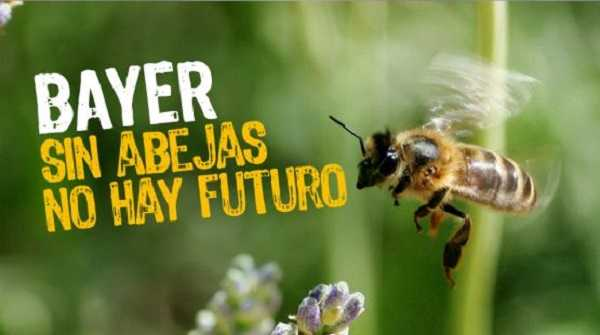
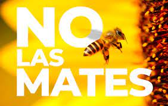
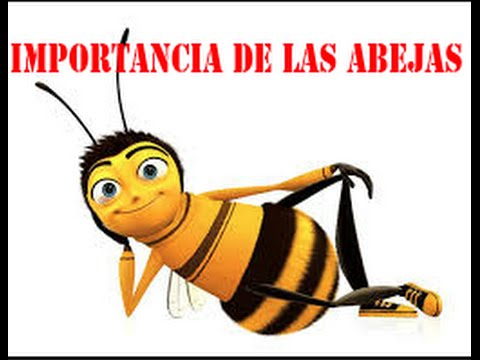

Estas abejas buscar alimento (polen y nectar de las flores),construyen la colmena y la protegen,limpian,hacen correr el aire batiendo sus alas.  
¿POR QUE DEBEMOS CUIDAR LAS ABEJAS?
Proteger a las abejas es cuidar la biodiversidad y convivivr de manera armoniosa con la naturaleza, ellas son parte de nuestro ecosistema y nos
ayudan a conservarlo, son parte esencial de la vida... Ademas, inciden en la preservacion de la diversidad biologica y de las especies.
"LA IMPORTACIA DE LAS ABEJAS"Heroes polinizadores:la importancia de las abejas para los cultivos. Las abejas no solo hacen miel.Hacen algo esencial para la dirversidad de las plantas en el mundo:la polinizacion.Su preservacion y la de su habitat nos beneficia a todos.
QUE PUEDES HACER TU PARA PROTEGER A LAS ABEJAS
| como proteger a las abejas |
|---|
| 1; Aprender a apreciar los silvestre |
| 2; Mas jardines y menos cespedes | 3; Plantar flores locales |
| 4; Plantar especies diversas en tamaño, color y forma |
|  |
| 5;Ayuda a proteger los enjambres de abejas |
¿Por que son importantes las abejas para el medio ambiente?:La organizacion para la agricultura y la alimentacion de las NACIONES UNIDAS (FAO) dice hay 100 especies de cultivos que proporcionan el 90% de los alimentos en todos el mundo,y 71 de ellos son polinizados por las abejas.y realizan otras muchas tareas para la comunidad.El trabajo de la abeja reina es sencillo:pone los nuevos que constituiran la nueva generacion de abejas.